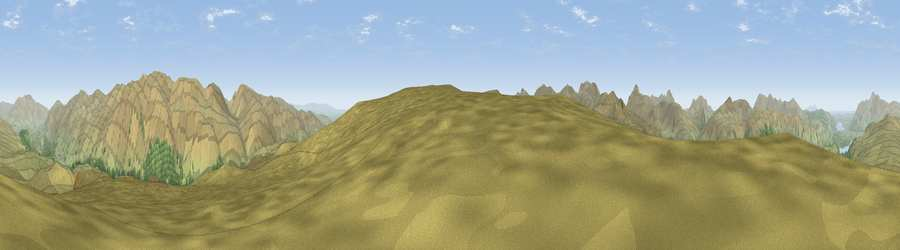

Viewpoint near Borrowdale
#5175 in England · top 33% of its area beats it · near BorrowdaleThe view, rendered

A 360° render of this exact spot computed from the terrain model, tree cover and land cover — summer colours, afternoon light, calibrated against photographs of famous viewpoints. Real trees, hedges and buildings will differ in detail.
The panorama
Grey silhouette: terrain skyline in each direction (720 bearings, Earth curvature and refraction included). Dashed green: skyline with trees (+15 m) and buildings (+8 m) as obstacles. Blue strip: how far the ground is visible on each bearing.
Where the view opens
Wedge length = distance to the farthest visible ground on that bearing (vegetation-aware). Rings at 10, 25 and 50 km.
What fills the view
93% grassland · 6% woodland ·
Angular shares of the visible panorama (visual magnitude), not map area. Landscape diversity 0.13 (0–1 Shannon).
Key numbers
More beautiful places nearby
The staircase of upgrades: each row has a higher view potential than everything closer. Driving times are estimates from straight-line distance, calibrated against real road routing — check an actual route before setting out.
| Place | Direction | Drive | Score |
|---|---|---|---|
| Viewpoint near Borrowdale | S · 0 km | ~2 min | 73.3 |
| High Raise | SSW · 3 km | ~8 min | 76.2 |
| Viewpoint near Legburthwaite | NE · 5 km | ~11 min | 84.5 |
| Pillar | W · 12 km | ~22 min | 86.8 |
| Illgill Head | WSW · 15 km | ~27 min | 88.4 |
| Viewpoint near Boot | WSW · 15 km | ~27 min | 88.9 |
| Long Side | NNW · 16 km | ~29 min | 89.5 |
| Viewpoint near Finsthwaite | SSE · 26 km | ~42 min | 90.3 |
54.50397, -3.09601 · source: screening · position refined by local search. Computed location — check access rights before visiting.